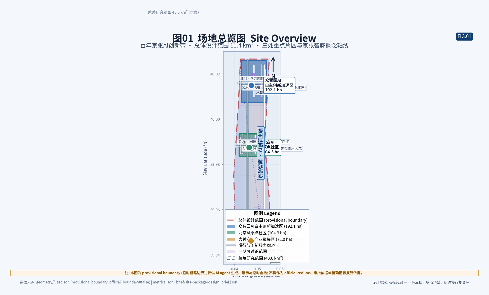
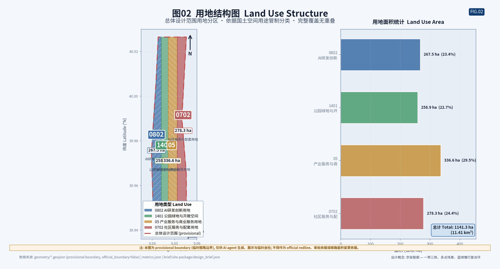
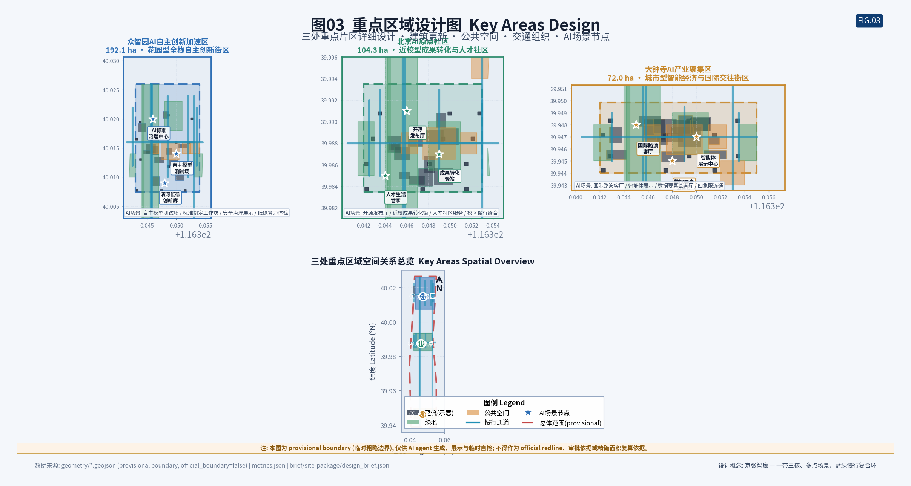
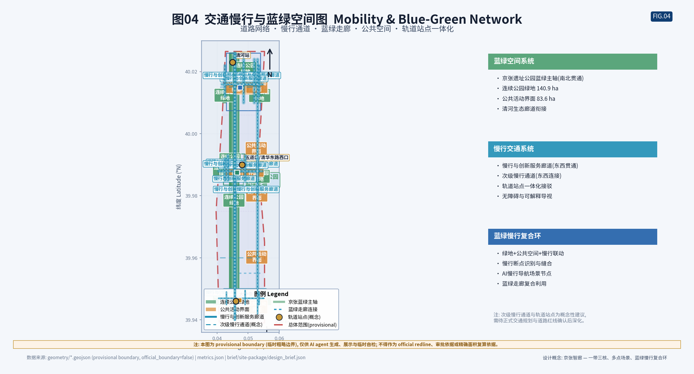
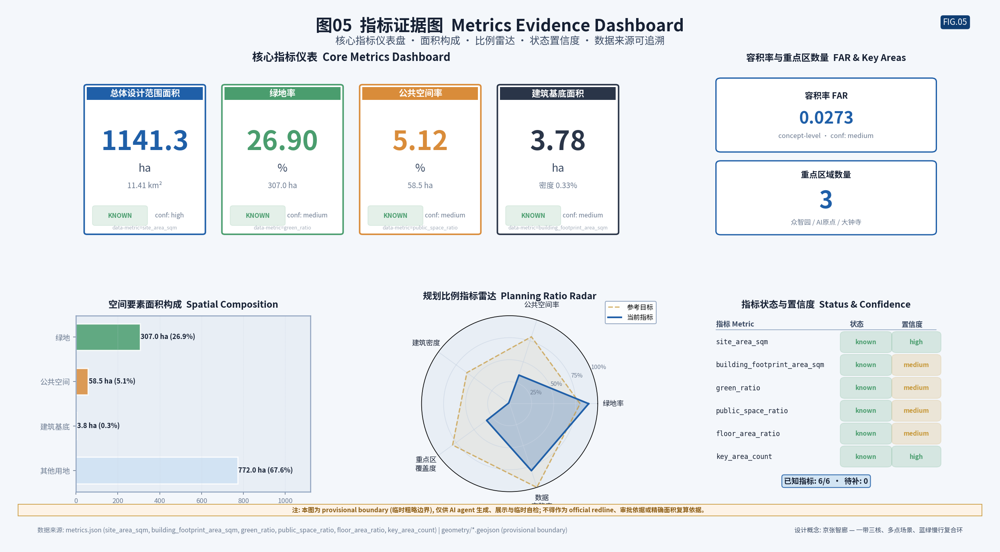

SCOPE 1 · 统筹研究范围
统筹研究范围
43.6 km²
北至北五环路，东至京藏高速，南至西直门外大街，西至万泉河路。面向AI产业生态、三区两翼协同、未来城市形态和文化叙事。
- AI创新链与人才链
- 全球案例转化机制
- 品牌命名与传播
- 五大功能与三区两翼
本页为纯离线静态电子展示成果，所有CSS与JS均内联，不加载任何CDN、外部字体、远程地图瓦片或API。权威数据仍以 GeoJSON、metrics.json、合规矩阵和自检结果为准；本页将总览地图、三层范围、重点区域、用地分区、交通慢行、蓝绿公共空间、核心指标、任务覆盖、自检状态与来源假设转成人类可读的视觉说明。总览地图基于 GeoJSON 坐标用内联 SVG 绘制。
以"京张智廊"为总体概念，将百年京张铁路文化遗产与AI创新产业深度融合，构建"一带三核、多点场景、蓝绿慢行复合环"的空间组织。
方案以北京市规划和自然资源委员会海淀分局发布的《百年京张AI创新带城市设计国际方案征集资格预审公告》为第一依据。总体概念为"京张智脉共生带"：以京张遗址公园为历史与公共空间主轴，以众智园AI自主创新加速区、北京AI原点社区、大钟寺AI产业聚集区三处重点片区为创新锚点，以高校、企业、社区和轨道站点为日常网络，形成"一带三核、多点场景、蓝绿慢行复合环"的空间组织。"一带"不是额外画出的新红线，而是把公告中的三层范围转译为工作方法；"三核"对应三处重点区域；"多点场景"对应AI+公共服务、产业服务和城市生活的可运营节点；"复合环"对应慢行、绿地、公共空间和活动路线的联动。
清华园火车站、京张铁路遗址、中关村创新文化
AI+交通、服务、消费、医疗、教育、法律、生活
高校策源、开源协作、企业转化、公共体验、国际传播
基于 GeoJSON 坐标用内联 SVG 绘制，显示总体设计范围(provisional boundary)、三处重点区域、用地分区、绿地、公共空间、建筑基底、慢行廊道与京张智廊概念轴线。
方案按统筹研究范围、总体设计范围、重点区域范围递进，把产业判断、城市更新和重点片区设计绑定到图层与指标。
北至北五环路，东至京藏高速，南至西直门外大街，西至万泉河路。面向AI产业生态、三区两翼协同、未来城市形态和文化叙事。
以京张遗址公园周边1-2公里城市地区和产业区为范围。组织城市更新、用地结构、交通市政、京张遗址公园活力带和城市风貌控制。
自北向南包括众智园AI自主创新加速区、北京AI原点社区、大钟寺AI产业集聚区。开展详细设计，明确功能业态、建筑规模、拆改留和公共空间。
三处重点片区必须有产业定位、空间策略、建筑与公共空间动作、交通接口和实施风险说明。
用地分区完整覆盖总体设计范围且无重叠，依据国土空间用途管制分类表达。
道路网络、慢行通道、蓝绿走廊与公共空间复合系统，支撑日常交往与创新活动。
从 metrics.json 读取的核心指标，使用 data-metric 和 data-value 属性标注。所有指标可追溯到 GeoJSON 图层与公式。
由 matplotlib 生成的5张专业城市设计图纸(PNG)，分辨率 ≥1920x1080 @ dpi=150，技术图解风格。





compliance_matrix.json 覆盖公告 1.3、1.4、1.5 与 agent.1-agent.6 必选任务。每条任务均有报告章节、图层、指标、图纸和HTML证据。
deterministic validation、spatial review、visual packaging check 与 professional evidence review 自检结果。当前边界状态：provisional geometry PASS intake only。
所有设计判断拆分为可追溯来源、可复算指标、可校验图层和可人工复核假设。本页不得加载CDN、远程地图瓦片、外部脚本、外部字体、API请求或iframe。
本页全部空间图纸、地图、指标和设计建议均基于 provisional boundary (临时粗略边界) 生成。
site_boundary.geojson 与 key_areas.geojson 的 geometry_role 均为 provisional_constraint，official_boundary=false，boundary_precision=provisional_rough。这些边界依据公告文字四至、约11.4平方公里面积约束和道路名称形成，不代表道路红线、地块边界或法定控制线。
根据 design_brief.json 的 submission_policy：provisional_boundary_allowed_for_intake=true，但 provisional_boundary_blocks_formal_professional_scoring=true。因此本页仅支持 intake 展示、讨论和返修，不作为正式专业评分图纸、审批依据、official redline 或精确面积复算依据。
当官方边界和重点区 polygon 发布后，agent 必须重新运行图纸生成、自检和HTML生成，不能只替换单个文件。所有空间结论均按"可讨论、可复核、可替换官方边界后重算"的原则呈现。
boundary_statement: 所有 agent 空间落地建议均为概念建议、参考方案或可供专业团队深化研究，不替代正式规划，不构成政府审定结论。